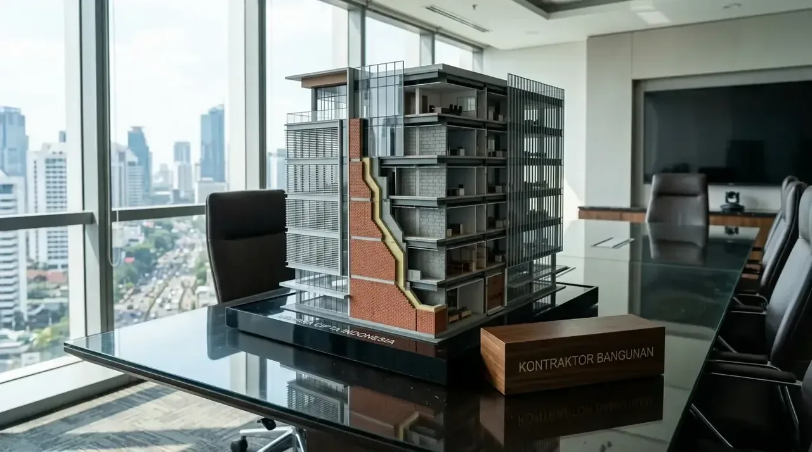

Mana yang Lebih Murah Secara Total Biaya Antara Bata Ringan dan Bata Merah?
Perhitungan akumulasi biaya total pengerjaan dinding membuktikan bahwa bata ringan lebih hemat dibanding bata merah jika memperhitungkan durasi kerja, efisiensi semen, serta biaya upah tukang.
Secara sekilas, harga pembelian bata merah per biji nampak lebih terjangkau di pasaran. Namun, pengerjaan bata merah membutuhkan plesteran tebal berkisar 2 hingga 3 cm di kedua sisi dinding. Sebaliknya, bata ringan Autoclaved Aerated Concrete (AAC) hanya memerlukan perekat semen instan (thin bed mortar) setebal 3 mm dan lapisan acian tipis.
| Parameter Evaluasi Biaya | Bata Merah Press | Bata Ringan AAC |
|---|---|---|
| Harga Material Utama / m² | Rp70.000 - Rp90.000 | Rp90.000 - Rp110.000 |
| Kebutuhan Semen & Pasir / m² | Tinggi (Adukan Semen Konvensional) | Sangat Rendah (Mortar Perekat Thin-bed) |
| Kecepatan Pasang Tukang / Hari | 6 - 8 m² / hari | 15 - 20 m² / hari |
| Ketebalan Plesteran | 2.0 cm - 3.0 cm | 0.3 cm - 0.5 cm (Acian Langsung) |
| Est. Total Biaya Terpasang / m² | Rp180.000 - Rp220.000 | Rp150.000 - Rp190.000 |
Data di atas menunjukkan bahwa meskipun biaya beli awal bata ringan relatif lebih tinggi, total pengeluaran terpasang per meter persegi justru lebih efisien.
- Berdasarkan Laporan Analisis Konstruksi Indonesia 2025/2026, efisiensi waktu pengerjaan bata ringan mampu menekan biaya total upah tenaga kerja sebesar 18% hingga 24% pada skala bangunan 2 lantai.
- Penggunaan bata ringan mengurangi beban struktur utama gedung sehingga menghemat penggunaan besi beton dan volume pondasi.
Komponen Biaya Apa Saja yang Membedakan Efisiensi Kedua Material Dinding Ini?
Komponen pembeda utama efisiensi material dinding meliputi pemakaian material perekat, kecepatan durasi kerja, serta beban total struktur bangunan terhadap pondasi.
Secara teknis, efisiensi bata ringan vs bata merah dipengaruhi oleh tiga variabel konstruksi utama:
- Efisiensi Bahan Perekat dan Plesteran: Bata merah menyerap adukan semen dan pasir dalam jumlah besar untuk meratakan permukaan yang acak. Bata ringan yang presisi cukup menggunakan lapisan mortar tipis sehingga menekan pembelian semen, koral, dan pasir pasang.
- Biaya Tenaga Kerja dan Kecepatan Konstruksi: Ukuran bata ringan yang lebih besar (60 cm x 20 cm) memungkinkan tukang memasang dinding lebih cepat. Kecepatan pengerjaan ini langsung mengurangi total hari kerja tukang harian atau mempercepat penyelesaian target sistem borongan.
- Penghematan Beban Struktur Utama: Berat jenis bata ringan yang jauh lebih rendah mengurangi bobot mati bangunan. Hal ini memungkinkan perancangan kolom beton dan pondasi yang lebih efisien tanpa mengurangi kekuatan bangunan.
Mengetahui keunggulan teknis ini membantu pengembang dan pemilik bangunan mengambil keputusan material secara bijak.

Pemasangan bata ringan pada proyek gedung modern yang menekankan efisiensi waktu dan biaya konstruksi.
Mengapa Kontraktor Bangunan Memilih Bata Ringan untuk Proyek Modern?
Penggunaan bata ringan oleh tim Kontraktor Bangunan menjamin kepastian jadwal serah terima proyek, kualitas kerapian dinding yang tinggi, serta efisiensi anggaran secara menyeluruh.
Memilih Kontraktor Bangunan profesional memberikan nilai tambah komersial bagi proyek Anda:
- Perhitungan RAB Presisi: Kontraktor menyusun analisis kebutuhan material dinding tanpa adanya pemborosan sisa bahan di lokasi pengerjaan.
- Teknologi Pemasangan Standar Industri: Penggunaan mortar instan dan alat khusus memastikan dinding tegak lurus, tidak retak rambut, dan siap di cat lebih cepat.
- Jaminan Durasi Pengerjaan: Proses aplikasi yang cepat memastikan proyek komersial maupun hunian selesai tepat waktu sesuai kontrak legal.
Untuk memastikan pemilihan material dinding yang paling ekonomis dan kokoh bagi properti Anda, serahkan pengerjaannya kepada tim Kontraktor Bangunan terpercaya.
- Pilihlah bata ringan tipe AAC dari produsen terpercaya yang memiliki sertifikasi SNI.
- Pastikan kontraktor menggunakan mortar perekat khusus (thin-bed) untuk hasil maksimal.
- Minta simulasi perbandingan biaya total terpasang sebelum memutuskan material.
Apa Saja Kesalahan dalam Memilih Material Dinding yang Merugikan Anggaran?
Kesalahan utama dalam pemilihan material dinding adalah hanya membandingkan harga beli bahan mentah tanpa memperhitungkan biaya plester, pasir, semen, dan akumulasi upah tukang.
Beberapa kekeliruan fatal yang sering terjadi di lapangan meliputi:
- ❌ Mengabaikan Biaya Transportasi dan Waktu: Membeli bata merah murah dari lokasi jauh sering kali menambah biaya pengiriman dan risiko pecah di jalan.
- ❌ Salah Memilih Jenis Semen Perekat: Menggunakan adukan semen pasir konvensional untuk bata ringan dapat menghilangkan presisi dan merusak ikatan struktural bata.
- ❌ Pengawasan Lapangan yang Lemah: Pemasangan bata merah tanpa lot tegak yang rapi mengakibatkan pemborosan bahan plesteran hingga 4 cm untuk menutupi dinding yang miring.
FAQ seputar Bata Ringan vs Bata Merah
Kesimpulan Praktis
Membandingkan bata ringan vs bata merah mana lebih hemat membuktikan bahwa bata ringan memberikan nilai efisiensi total biaya yang lebih tinggi untuk bangunan modern. Dengan efisiensi semen, kecepatan pasang, dan pengurangan beban struktur, bata ringan menjadi opsi paling tepat bagi investasi properti Anda.
Pastikan proyek pembangunan Anda berjalan hemat, rapi, dan kokoh. Hubungi tim Kontraktor Bangunan kami sekarang untuk konsultasi material serta penawaran RAB terbaik!